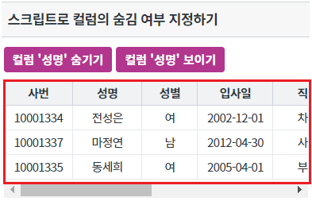
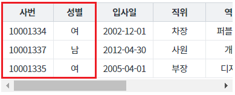
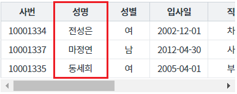

GridView의 열의 숨김 여부을 스크립트로 지정하는 예제입니다. 이 기능은 아래의 함수를 호출하여 사용할 수 있습니다. - setColumnVisible : 특정 열의 숨김 여부 설정
스크립트로 컬럼의 숨김 여부 지정하기
영역 [스크립트로 컬럼의 숨김 여부 지정하기]의 GridView를 확인합니다.
[브라우저(Chrome) 실행 예시]

버튼 컬럼 '성명' 숨기기을 클릭합니다.
컬럼 '성명'이 숨겨집니다.
[브라우저(Chrome) 실행 예시]

버튼 컬럼 '성명' 보이기을 클릭합니다.
컬럼 '성명'이 표시됩니다.
[브라우저(Chrome) 실행 예시]

GridView의 함수 setColumnVisible을 사용합니다.
[소스 코드 예시]
//예제 파일의 스크립트 "scwin.btn_ex1_1_onclick", "scwin.btn_ex1_2_onclick"을 참고바랍니다. //GridView 'grd_exam1'의 컬럼 '성명'을 숨기기 grd_exam1.setColumnVisible("EMP_NM", false); //GridView 'grd_exam1'의 컬럼 '성명'을 보이기 grd_exam1.setColumnVisible("EMP_NM", true);
setColumnVisible( colIndex , colVisibleFlag )
getColumnVisible( colIndex )
[웹스퀘어5 SP5 개발 가이드] GridView
링크 : https://docs1.inswave.com/sp5_user_guide/bc10c1b82c9a2a0b#e1c4658baf7e726f
[웹스퀘어5 SP5 개발 가이드] GridView 컬럼 숨기기
링크 : https://docs1.inswave.com/sp5_user_guide/86bdcf48029b958b#b4aac304847879a2